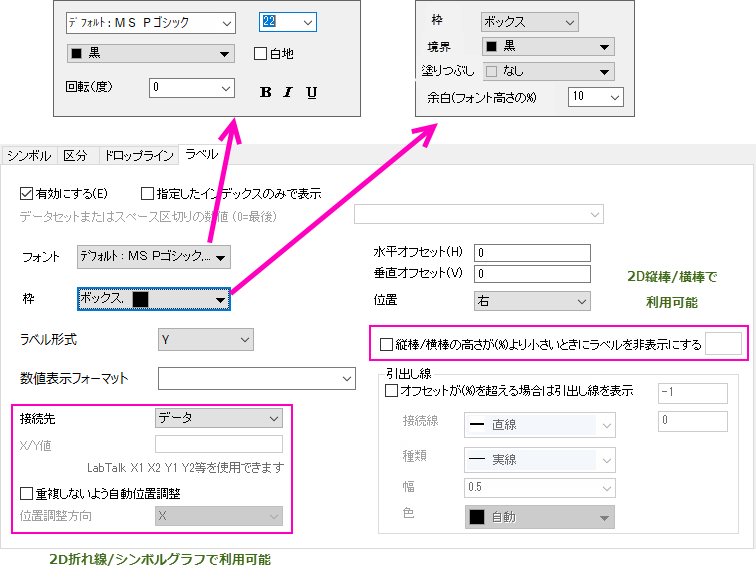
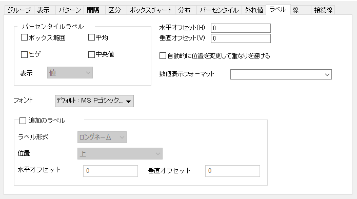
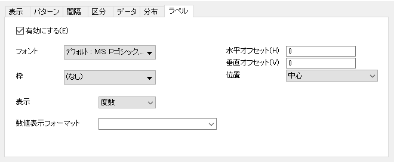
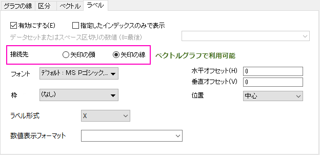
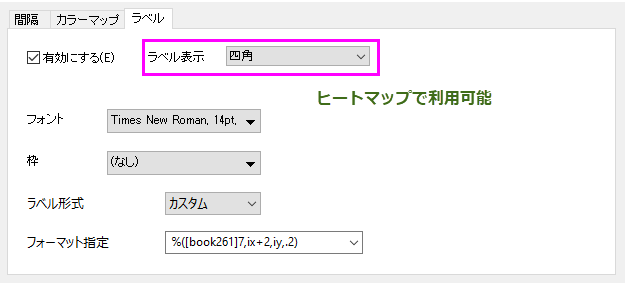
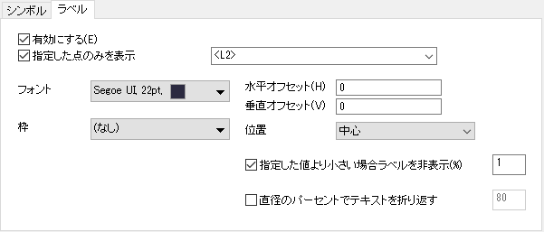
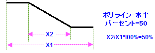
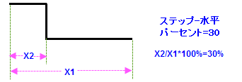
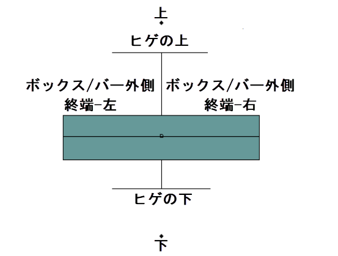

関連するビデオ：ワークシート列のデータに基づくラベリングデータプロット
関連するビデオ：ワークシート列のデータに基づくラベリングデータプロット
 関連するビデオ：ワークシート列のデータに基づくラベリングデータプロット
関連するビデオ：ワークシート列のデータに基づくラベリングデータプロット
ラベル参照元を指定するには、2通りの方法があります。
ワークシートのラベル列を使ってプロットにラベルを付けた場合、以前のバージョンのように作図の詳細ダイアログにラベルデータセットは表示されません。どの方法でラベルを付けても、以下に説明しているように、Yデータセットのラベルタブを使用します。
| 直交座標系の2D折れ線/線＋シンボルグラフや2D縦棒/横棒グラフの「ラベル」タブ |
 |
| ボックスチャートのラベルタブ |
 |
| ヒストグラムのラベルタブ |
 |
| 2Dベクトルのラベルタブ |
 |
| 樹状図のラベルタブ |
| ヒートマップのラベルタブ |
 |
| 円パッキンググラフのラベルタブ |
 |
このチェックボックスにチェックを付けて、データプロットにラベルを追加します。
Origin2020b以前では、このボックスをオンにすると、プロットグループ内のすべてのプロットのラベルが有効になっていました。指定したデータのみでデータ表示を選択することで、このボックスは、グループの一部であるかどうかにかかわらず、選択したプロットのラベルのみを有効にします。しかしながら、ミニツールバーのデータラベルを表示ボタンを使用して、すべてのプロットにラベル付けをすることもできます。
グループ内のすべてのプロットに同時にデータラベルを追加するには：
|
指定したデータポイントにのみラベルを付けるには、このボックスをオンにします。リストボックスを使用してラベルの場所を指定します。
| 構文 | 説明 | 例 |
|---|---|---|
| a b c d e | スペース区切りの行番号のリストでラベルを表示 | 1 4 5 9 |
| n:m:s | n からm 行の間で、s 行スキップして表示 | 2:0:5 |
| x=a b d g | X値の位置でラベルを表示 | x=3.5 7.8 10.2 14.0 |
| [BookN]sheetM!col(A) | 指定された列に含まれる行番号の位置でラベルを表示 | [Book1]Sheet2!Col(A) |
| x=[BookN]sheetM!col(A) | 指定した列にリストされているx値のラベルを表示 | x=[Book1]Sheet2!Col(A) |
の機能の1つの用途として、標準のグラフ凡例を使用する代わりに、プロットメタデータを使用して個々のプロットにラベルを付けることができます。詳細は、FAQ-1065 各折れ線グラフに凡例タイプのエントリでラベル付けするにはどうすればいいですか？を参照してください。 |
ボックスチャートのパーセンタイルラベルを有効にします。
| ボックス範囲 | ボックスプロットの横の上、中央、下の線にラベルを表示します。
例えば、ボックスの範囲でパーセンタイル25, 75を選択すると、75パーセンタイル、中央値、25パーセンタイルの値ラベルがグラフ上に表示されます。 |
|---|---|
| ヒゲ | ボックスプロットの横に上下のヒゲのラベルを表示します。 |
| 平均 | ボックスプロットの横に平均のラベルを表示します。
平均の位置は、シンボル（パーセンタイルタブ）および/または水平線（線タブ）で表示できます。平均にラベルを付けるには、これらのタブの少なくとも1つで平均の表示を有効にする必要があります。 Origin 2020以降では、ボックスを表示せずに水平線を使用して平均の位置を表示することができますが、 (例えば、ボックスチャートタブで種類=点列に設定) ラベルボックスを使用するには、一時的にタイプ=ボックスを有効にする必要があります。。一度チェックを付けると、ボックス表示を無効にすることができ、水平線はラベルが付いたままになります。 |
| 中央値 | ボックスプロットの横に中央値のラベルを表示します。
中央値の位置は、シンボル（パーセンタイルタブ）および/または水平線（線タブ）で表示できます。中央値にラベルを付けるには、これらのタブの少なくとも1つで平均の表示を有効にする必要があります。 Origin 2020以降では、ボックスを表示せずに水平線を使用して中央値の位置を表示することができますが、 (例えば、ボックスチャートタブで種類=点列に設定) ラベルボックスを使用するには、一時的にタイプ=ボックスを有効にする必要があります。。一度チェックを付けると、ボックス表示を無効にすることができ、水平線はラベルが付いたままになります。 |
| 外れ値 | 外れ値のラベルを表示するか指定します。このチェックボックスをオンにすると、外れ値の引出し線グループを使用して指定したオフセットを超えた外れ値に引出し線を追加できます。 |
| 表示 | ボックス/ヒゲ/平均値ラベルを表示する時に値、パーセンタイル、または両方を表示するよう指定します。 |
ラベルテキストのフォントを選択します。
デフォルト: フォント名 を選択すると、オプションダイアログボックス(環境設定: オプション)のテキストフォントの標準フォントドロップダウンリストで決めたフォントを使います。
ラベルのフォントサイズ(ポイント単位)を入力または選択します。
デフォルトのサイズは、オプションダイアログ（環境設定：オプション）のテキストフォントタブ上のテキストツールグループのサイズコンビネーションボックスで設定されている値によって決定されます。
ラベルの色を選択します。
作図の詳細ダイアログで、色が自動に設定されていて、その他のオプションタブ(ページレベル)のシンボルに従うラベルの自動カラーが選択されている場合、ラベルの色はシンボルの色に従います。
作図の詳細ダイアログで、色が自動に設定されていて、その他のオプションタブ(ページレベル)のシンボルに従うラベルの自動カラーのチェックが外れている場合、背景色と最もコントラストが付く色が選ばれます。
このチェックボックスにチェックを付けると各ラベルの背景が白地になります。
ラベルを回転する角度を度単位で入力または選択します。
0度は水平なテキストになります。
このチェックボックスは一点のみ編集する場合で利用可能です。
一点のみ編集する場合、特に編集しない限りは他のプロットのプロパティに従います。強調は、この点が従っているプロットの太字、斜体、下線 などの書式のことです。チェックを外すと書式ボタンを使用できます。
ラベルテキストのテキストフォーマットボタン(太字、斜体、下線)をクリックします。
_Label2_Tab/Plot_Details_Accent_Buttons.PNG)
複数行のデータラベルの位置合わせに使用します。一部のグラフタイプでは利用できません。
自動: 位置の設定に従います。
ほかに、位置合わせ = 左、右、中央揃えに設定することができます。
ラベルテキストの枠を追加するかどうかを指定します。このオプションはボックスチャートでは利用できません。
このドロップダウンリストでは、なし、ボックス、影の3つから選択ができます。
枠のオプションは、特別なポイントでは、デフォルトで自動に設定されています。つまり、特別なポイントの設定は、プロット全体の設定に従います。ただし、必要に応じて、これらの設定は変更できます。
枠としてボックスまたは影を選択した場合、ラベルボックスの境界色を設定できます。
枠としてボックスまたは影を選択した場合、ラベルボックスの塗りつぶし色を設定できます。
フォント高さの%で枠の余白を調整します。上/下/左/右の余白で同じ値です。このオプションはボックスチャートでは利用できません。
このオプションは、特別なポイントでは、デフォルトで自動に設定されています。つまり、特別なポイントの設定は、プロット全体の設定に従います。ただし、必要に応じて、これらの設定は変更できます。
ラベルとして使用する値またはデータセットを指定します。
| X | データのX値をラベルとして使用します。 |
|---|---|
| Y | データのY値をラベルとして使用します。 |
| 行インデックス | 行インデックス（行番号）をラベルとして使用します。 |
| (X, Y) | データのX、Y値をラベルとして使用します。 |
| カスタム | フォーマット指定で指定した内容とフォーマットを使ってラベルを作成します（次のセクションを参照）。 |
| Col(列のショートネーム) | ワークシートの指定列の内容をラベルとして使用します。 Y列データの右側にあるすべての列がここに一覧表示されます。 |
数値表示フォーマットの注意：
フォーマット指定の注意:
このドロップダウンリストは、ヒストグラムでのみ有効です。
どの値をラベル、度数、パーセント（パーセントフォーマットでそれぞれのビンに関連する頻度）、両方として表示するのかを指定します。
このオプションはベクトルグラフでのみ利用できます。
矢印の頭または矢印の線にラベルを付けるか選択します。XYXYデータセットから作図したベクトルグラフの場合、ラベルに表示される座標は、ラベルが付く終点の座標になります。
このチェックボックスは一点のみ編集する場合で利用可能です。
一点のみ編集する場合、特に編集しない限りは他のプロットのプロパティに従います。自動オフセットは、その点が従っているプロットのラベル位置を意味します。チェックを外して、水平オフセットおよび垂直オフセットの編集ができます。
ラベルオフセットは、フォントの高さのパーセントで指定できます。ラベル位置を調整するには、正または負の値を入力します。
ラベルの位置を指定します。このオプションはボックスチャートでは利用できません。
| 中心 | データポイントの中心にラベルを配置します。 |
|---|---|
| 左 | データポイントの左または右にラベルを配置します。 |
| 右 | |
| 上 | データポイントの上または下にラベルを配置します。 |
| 下 | |
| 上部（内） | このオプションは縦棒/横棒グラフで適用できます。
縦棒/横棒の終端で、棒の内側にラベルを配置します。 |
| 下部 | このオプションは縦棒/横棒グラフで適用できます。
縦棒/横棒の開始位置にラベルを配置します。 |
| 上部（外） | このオプションは積み上げていない縦棒/横棒グラフで適用できます。
縦棒/横棒グラフや滝グラフにおいて上部（外）を選択すると、縦棒/横棒の終端で棒の外側にラベルが配置されます。 2つのデータプロットを接続するドロップラインを持つロリポッププロットなど、ドロップラインのあるプロットでは、上部（外）を選択すると、ドロップラインの終点から離れてラベルが配置されます。 |
| 自動 | このオプションは垂直/水平樹形図でのみ利用できます。
ラベルは常に葉の反対側に配置されます。XY軸を交換した後にラベルを自動再配置すると便利です。 |
| 角度 外部 | このオプションは円形樹形図でのみ利用できます。
葉の外側にラベルを配置します。 |
| 角度 内側 | このオプションは円形樹形図でのみ利用できます。
葉の横にラベルを配置します。 |
このコントロールは2D縦棒/横棒グラフでのみ使用できます。
指定した値より縦棒/横棒の長さが短い場合に、棒グラフのラベルを非表示にします。整数のみ入力できます。
限界長さ=パーセント値%* Y軸の長さ
このオプションは円パッキンググラフでのみ利用できます。
割合がN%未満のカテゴリのラベルを自動で非表示にします。
このオプションは円パッキンググラフでのみ利用できます。
カテゴリ直径の割合でラベルを自動的に折り返します。
これらのコントロールは、プロットタイプが2D直交座標系の線/シンボルの場合にのみ使用可能です。
データラベルの参照位置を指定します。データラベルの位置は参照位置の設定である水平オフセット、垂直オフセット、位置を元に計算されます。
| データ | 対応するデータポイントの位置をリファレンスにします。 |
|---|---|
| X線 | X = 値、をリファレンスにします。つまり、Y 軸に平行な線の上になります。 |
| Y線 | Y = 値、をリファレンスにします。つまり、X 軸に平行な線の上になります。 |
| エラーバー | エラーバーの位置を参照として使用します。
|
このテキストボックスは、接続先がX線またはY線に設定されている場合にのみ使用できます。
リファレンス位置を定義する値を指定するのに使用します。値は任意のdoubleの値か、X1 X2 Y1 Y2のようなLabTalk表記で入力します。X1/X2 はX軸の開始/終了の値を示します。Y1とY2も同じです。
これは重複したデータラベルの位置についての設定です。
このチェックボックスにチェックを付けると、ラベルが重ならないように調整します。チェックを付けない場合、データラベルの位置は他のデータラベル、データポイント、引出し線と重なっても変更されません。
このドロップダウンメニューは自動的に位置を変更して重なりを避けるのチェックがついている時のみ選択できます。
位置の調整が必要なときにデータラベルを移動する方向を指定します。X とYから選択してデータラベルの再配置をX軸沿いあるいはY軸沿いに行うように指定します。
引出し線はリファレンス位置（接続先ドロップダウンリストで指定する）にあるデータラベルとグラフをつなげる線オブジェクトです。
引出し線を表示するかどうかを指定します。引出し線はデータラベルとデータポイントが特定の有効な長さを超えた場合にのみ表示します。有効な長さはチェックボックスの隣にあるテキストボックスにパーセント値を入力します。
有効な長さ＝パーセント値％ * (レイヤの高さ + レイヤの幅)/2
引出し線の接続線の種類を選択します。直線、ポリライン‐水平、ポリライン‐垂直、ステップ-水平、ステップ-垂直、水平、垂直の7つのオプションがあります。ポリライン‐水平とポリライン‐垂直は3つの区分がある線を作成し、中央の区分は斜めになります。 ステップ‐水平とステップ‐垂直は3つの区分がある線を作成し、中央の区分は垂直になります。
ポリライン‐水平とポリライン‐垂直を選択すると、接続線ドロップダウンリストの隣のテキストボックスで2つの変曲点間の水平または垂直距離のパーセントを変更できます(下図(1))。同様に、ステップ‐水平とポリライン‐垂直を選択すると、接続線ドロップダウンリストの隣のテキストボックスで変曲点位置を水平または垂直距離のパーセントで指定できます(下図(2))。
 |
 |
図(1) |
図(2) |
次の図のように「L字型」の引出し線を得るには、接続線 = ステップ-水平に設定し、テキストボックスに0を入力します。 |
出し線の線の種類を指定します。
引出し線の幅を指定します。
引出し線の色をシステム色かカスタム色で指定します。自動に設定されている場合、引出し線の色はデータラベルと同じになります。
このオプションは樹形図でのみ利用できます。
葉のラベルのみを表示するには、このチェックボックスにチェックを付けます。これによりノードのラベルが非表示になります。
このオプションは樹形図でのみ利用できます。
重複したラベルを自動的に非表示にするには、このチェックボックスにチェックを付けます。
このドロップダウンリストは、分割タイルヒートマップを含むヒートマップにのみ有効です。
四角、上三角、対角線のない上三角、下三角、対角線のない下三角、値によるの中からラベル表示方法を選択します。
値によるを選択すると、ラベル形式で設定したラベル値に対して、どのセルにラベルを表示するかを決定する値の条件を設定できます。
| Note:
ヒートマップのXおよびYがN*Nでない場合、オプションは、上三角、対角線のない上三角、下三角、対角線のない下三角の4つの表示方法は使用できません。 |
ボックスチャートのラベルを追加します。

このコントロールグループは、ヒートマップセルに有意マークを追加するために使用できます。
有意マークを表示する場所を指定します。
この編集可能なコンボリストは、有意マークを決定するためのデータソースを指定できます。
データソースを分割するための有意水準（レベル）を入力します。これらの範囲が、値に対して表示されるマークを決定するために使用されます。
有意マークとして使用する記号を入力します。デフォルトでは、自動が選択されており、有意レベルに応じた記号（例えば *）が自動的に決まります。
クリックするとグラフの下に有意水準を示す脚注を追加します。
例えば、レベルが0,05 0.01 0.001に設定され、シンボルが自動(* ** ***) に設定されている場合：
そして、有意レベルに関する脚注は以下のように表示されます：
* ≤ 0.05 ** ≤ 0.01 *** ≤ 0.001